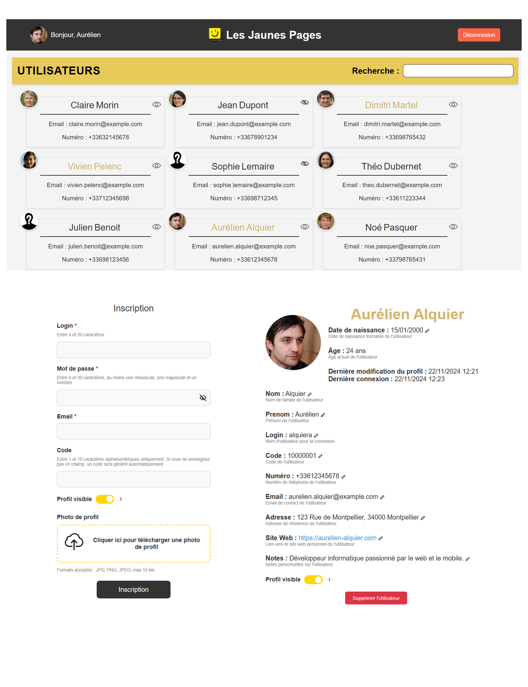

Les Jaunes Pages - Annuaire en ligne (Projet de BUT3)
- Compétences déployées : Symfony, Twig, JavaScript, MySQL, Docker, Gestion d'événements (ORM), API JSON, Méthodologie Agile (Scrum).
Développement d'un annuaire web en Symfony, visant à gérer les utilisateurs et leurs profils avec différentes fonctionnalités d'administration.
Fonctionnalités principales :
- Inscription avec code unique généré ou personnalisé, vérification en temps réel avec JavaScript.
- Visibilité du profil (public/masqué), avec gestion des profils listés et non listés.
- Modification des profils avec formulaire pré-rempli et suivi des dates de connexion et d'édition.
- Administration des profils : suppression d'utilisateurs (hors administrateurs), accès aux profils masqués.
- Mode maintenance activable via fichier de configuration YAML.
- API utilisateur pour récupérer les données au format JSON.
Ce projet a été réalisé en groupe de quatre avec une méthodologie Scrum, dans le cadre de ma troisième année de BUT informatique.
Quelques détails techniques :
- Base de données MySQL avec gestion des migrations (Doctrine) et des fixtures pour les données factices.
- Commandes Symfony pour créer des utilisateurs ou gérer leurs rôles directement depuis le terminal.
- Notifications d'erreur claires pour l'utilisateur en cas de conflit de code ou problème d'inscription.
Ce projet m'a permis de renforcer mes compétences en Symfony et d'explorer des notions avancées comme les événements, les commandes CLI et la gestion d'API REST.
